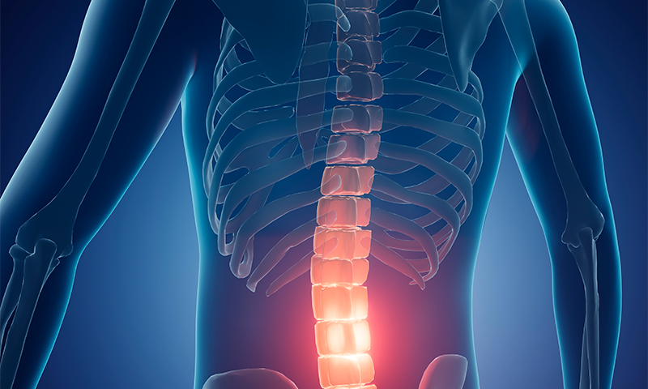

신경차단술

신경차단술
허리디스크나 척추관협착증 등 허리 통증을 호소하는 분에게 사용되는 술기로서, 신경을 자극하고 압박해 생긴 염증을 가라앉히는 주사입니다. 보통은 국소마취제와 함염증제, 유착박리제 등을 혼합 해 주입하는데 신경 부종을 완화하고 주변 염증을 세척하여 통증을 나아지게 하는 술기입니다.
시술 방식 및 효능
실시간 방사선 장치를 통해 병변 부위를 정확하게 파악 후 주사합니다. 마취성분으로 인해 1시간에서 4시간 사이 저림이나 통증을 빠르게 줄여주는 과가 있습니다. 유착박리제는 오래된 척추관의 협착과 디스크의 유착된 부분을 녹여 신경의 움직임을 개선하고 통증을 줄여줍니다.
나스정형외과 신경차단술 시술 방법
- 감염의 위험이 없는 무균 처리된 수술실에서 시행합니다.
- 환자는 엎드린 자세로 치료를 받게 되며, 국소마취 후 치료를 시행합니다.
- C-arm 영상투시장비를 이용하여 치료부위에 가느다란 관을 삽입합니다.
- 치료부위까지 정확하게 삽입된 관을 통해 통증의 원인이 되는 신경부위의 유착을 제거합니다.
- 치료부위에 자리잡은 관이 움직이지 않도록 임시 봉합 후 회복실로 이동합니다.
- 삽입된 가는 관을 통해 약물을 주입하여 재유착 및 염증유발 물질을 제거합니다.
- 환자 상태에 따라 시술이 끝나면 삽입된 가는 관을 통해 2~3일 동안 유착제거약물을 주입하게 됩니다.